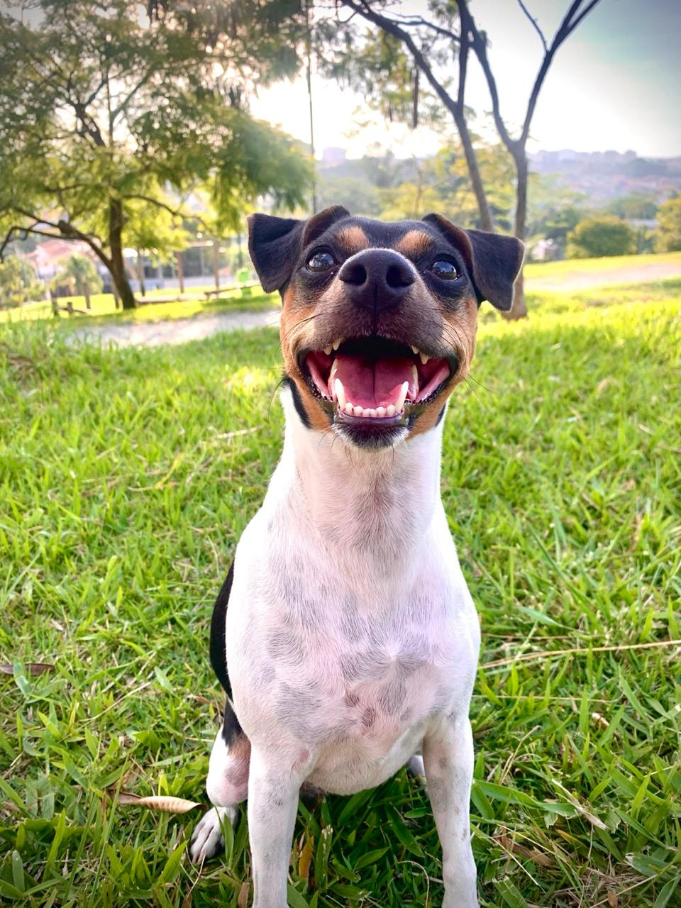
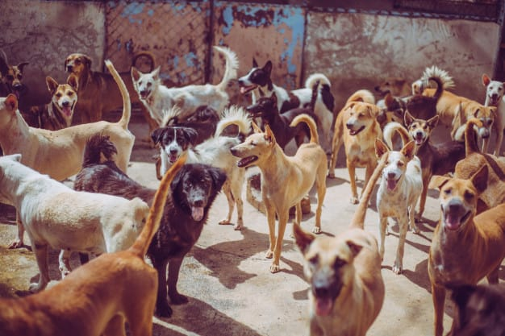

Seja bem-vindo!
O Instituto OJN é um projeto idealizado por mim desde a infância, motivado pela sensação de que nasci para ajudar animais em situação de rua. Muitos deles são, infelizmente, abandonados e maltratados diariamente, vivendo sem alimento, proteção e amor.
Nesse contexto, a ONG busca oferecer cuidado, respeito, atenção e saúde, além de incentivar a adoção responsável. Nós, do Instituto, acreditamos que todos os animais devem ser tratados com dignidade, respeito e amor .


Sobre o Instituto
O Instituto OJN I nasce com o propósito de transformar a realidade dos animais em situação de rua e, principalmente, a relação deles com a população. Muitos são abandonados e esquecidos, enfrentando dificuldades significativas, como fome, frio, maus-tratos e a falta de cuidados básicos.
A proposta da nossa ONG é oferecer a esses animais uma nova chance, para que tenham uma vida digna e especial, com acolhimento, monitoramento semanal por diversos profissionais da saúde, cuidado personalizado, adestramento, visitas e momentos de lazer e brincadeira.
Além disso, promovemos a adoção consciente, incentivando o planejamento e o compromisso com os cuidados necessários, sejam eles físicos ou emocionais.
Mais do que resgatar, nosso instituto tem como principal objetivo transformar a forma como as pessoas enxergam os animais, promovendo empatia, respeito, responsabilidade e amor.
Afinal, acreditamos que mudar a vida de um animal também é transformar o mundo ao nosso redor.